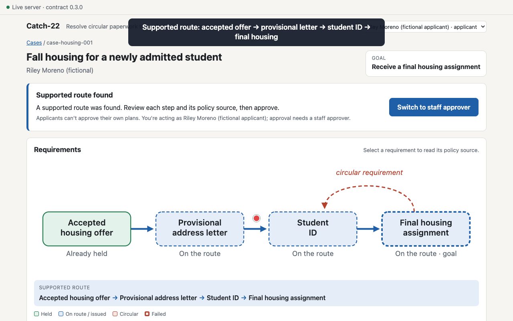

Catch-22: demo
Resolving a circular housing / student-ID requirement through the documented alternative route. Recorded from the running app with a live model (61 s).


Resolving a circular housing / student-ID requirement through the documented alternative route. Recorded from the running app with a live model (61 s).
